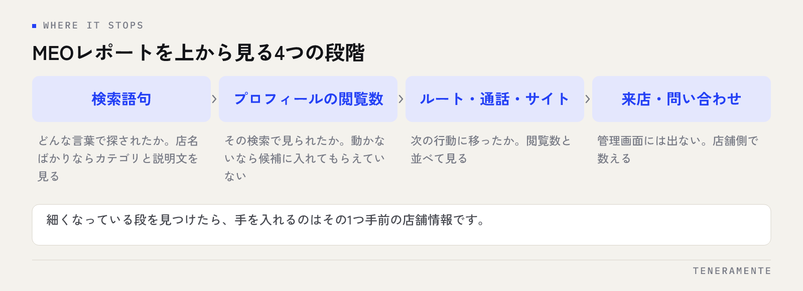

表示回数は増えているのに、問い合わせも来店も変わらない。MEOレポートを前にして止まってしまう原因は、数字が足りないことではなく、見る順番が決まっていないことです。MEOレポートは全部の数字を読むためのものではなく、「探された・見られた・反応された」のどこで止まっているかを特定するために見ます。
📌 この記事の結論
MEOレポートは、検索語句 → 閲覧数 → ルート検索・通話・ウェブサイトのクリック、という順に上から見ていきます。打ち手が変わるのは「どの段階で数字が細くなっているか」だけです。閲覧数が増えて反応が増えないなら店舗情報の中身、閲覧数そのものが動かないならカテゴリと検索語句を疑う、という切り分けで十分に回せます。
01MEOレポートの数字は、4つの段階に分けて見る
Googleビジネスプロフィールの管理画面で見られる数字は、「パフォーマンス」にまとまっています。検索語句、プロフィールの閲覧数、ルート検索、通話、メッセージ、予約、ウェブサイトのクリックといった項目が並びます。

この並びを、お客様がたどる順番に置き換えると見方が決まります。
まず、どんな言葉で探されたか（検索語句）。次に、その検索でプロフィールが見られたか（閲覧数）。そのあと、地図や電話に手が伸びたか（ルート検索・通話・クリック）。最後に、実際に来店や問い合わせに至ったか。最後の段階だけは管理画面に出ないので、店舗側で数える必要があります。
数字が細くなっている段を見つければ、見るべき項目はその1つ手前に決まります。全項目を並べて眺めても判断材料は増えません。MEO対策全体の進め方はMEO対策の完全ガイドにまとめています。
02検索語句は「どう呼ばれているか」を確かめる項目
検索語句は、プロフィールが表示されたときに使われた語句の一覧です。ここで確かめるのは順位ではなく、自店が想定している呼び方と、実際に使われている言葉が合っているかです。
見方は3つに分かれます。1つめは、店名での検索が多いか、サービス名や地域名での検索が多いか。店名ばかりなら、すでに店を知っている方にしか届いていない状態です。2つめは、提供しているのに語句として出てこないサービスがないか。3つめは、扱っていないサービスの語句で表示されていないか。
2つめと3つめは、どちらもカテゴリと説明文の調整につながります。語句として出てこないサービスは、カテゴリの追加かサービス項目への登録で拾えることがあります。カテゴリの決め方はGoogleビジネスプロフィールのカテゴリの選び方を参照してください。
03閲覧数が伸びないときに見るところ
閲覧数は、Google検索とGoogleマップでプロフィールが見られた数です。ここが動かないときは、そもそも候補に入っていないか、候補に入っても選ばれていない、どちらかです。
先に確かめるのは、自店が候補として出ているかどうかです。店舗の近くから、お客様が使いそうな語句で実際に検索してみてください。一覧に出てこないのであれば、閲覧数の問題ではなく、掲載順位の問題として扱います。見られている語句に偏りがあるなら、カテゴリと説明文の範囲が狭すぎる可能性があります。
閲覧数は、工夫の成果ではなく「候補に入れてもらえた結果」です。数字を動かす操作は、レポートの中ではなく店舗情報の側にあります。
一覧に出ているのに閲覧数が伸びない場合は、一覧で見える要素、つまり店名、カテゴリ、写真の1枚目、口コミの星と件数が判断材料になっています。順位が下がった場合の原因の切り分けはGoogleマップの順位が下がったときにまとめました。
04ルート検索・通話・クリックは、閲覧数とセットで見る
ルート検索、通話、ウェブサイトのクリックは、プロフィールを見た方が次の行動に移った数です。この3つは単独の件数ではなく、閲覧数と並べて見ます。
閲覧数が増えているのに3つが増えていない場合、プロフィールの中身で判断が止まっています。考えられるのは、営業時間が実態と違う、写真が店内の様子を伝えていない、電話番号やウェブサイトが入っていない、口コミへの返信がない、といった点です。
逆に、閲覧数が横ばいのまま3つが増えているときは、情報の整備が効いている状態です。この場合は同じ方向を続けて、閲覧数を増やす側の作業に移ります。
どの数字が増えやすいかは業種で変わります。飲食や美容のように当日の来店が多い業種はルート検索と通話が動きやすく、見積りや相談が前提の業種はウェブサイトのクリックが動きやすい傾向があります。自店の形に合った項目を主に見てください。
05先月と比べるときに、やりがちな間違い
月次で並べたときに見誤りやすいのが、比べる期間です。注意したいのは次の点です。
- 月の日数が違う（31日の月と28日の月を同じ条件で比べない）
- 期間の指定が先月と同じ長さになっているかを確認する
- 季節で動く業種は、前月ではなく前年同月と比べる
- 掲載や広告を動かした月は、その影響が混ざる前提で見る
- 数字が取れる期間には限りがあるため、残したい月は手元に控えておく
とくに3つめは、繁忙期のある業種で判断を狂わせます。前月比で下がっていても、前年同月で上がっているなら施策は効いています。
数字の上下に名前を付けて記録する
月次の数字の横に、その月にやったこと（写真を追加、営業時間を修正、投稿を増やした、など）を1行で書き添えてください。半年たつと、数字だけでは何が効いたか分からなくなります。記録は数字と同じ場所に残すのが確実です。
06止まっている場所から、次の一手を決める
段階ごとの症状と、先に手を付ける場所を整理しておきます。
| 数字の状態 | 疑うところ | 先にやること |
|---|---|---|
| 検索語句が店名ばかり | 知らない人に届いていない | カテゴリとサービス項目の見直し |
| 提供しているサービスの語句が出ない | カテゴリ・説明文の範囲が狭い | カテゴリの追加、説明文への記載 |
| 閲覧数が動かない | 候補に入っていない | 近くから実検索、順位側の確認 |
| 閲覧数は増えたが反応が増えない | プロフィールの中身 | 営業時間、写真、電話・URL、口コミ返信 |
| ルート検索だけ極端に少ない | 所在地・地図ピンの精度 | 住所表記とピンの位置を確認 |
| 通話が減った | 電話番号の項目、営業時間 | 番号の記載と特別営業時間を確認 |
表の右の列は、どれも管理画面の数字をいじる作業ではありません。レポートは原因の場所を指すだけで、直す場所は常に店舗情報の側です。ここを分けて考えると、作業が具体的になります。
07毎月のレポートは、同じ5項目に固定する
毎月見る項目を決めていないと、その月に目立った数字だけを追う形になり、比較ができなくなります。固定するのは次の5つで十分です。
プロフィールの閲覧数、検索語句の上位、ルート検索、通話、ウェブサイトのクリック。この5つを前月と前年同月の横に並べ、その月にやったことを1行添える。これだけの形にしておけば、毎月の作業は短時間で終わります。
項目を増やすと続かなくなる
はじめから細かく分けたレポートを作ると、作業に時間がかかって数か月で止まります。止まったレポートは比較に使えません。少ない項目で続けたほうが、判断材料として役に立ちます。
店舗情報の点検とレポートの確認は、同じ日にまとめてしまうのが現実的です。確認項目の立て方はGoogleビジネスプロフィールの月次チェックリストを下敷きにしてください。
表示回数が増えているのに問い合わせが増えません。何から見ればよいですか？
MEOレポートの数字は、どのくらいさかのぼって見られますか？
複数店舗ある場合、レポートは店舗ごとに見るべきですか？
08まとめ：レポートは「どこで止まったか」を探す道具
MEOレポートの見方は、検索語句 → 閲覧数 → ルート検索・通話・クリック、という順に上から見て、細くなっている段を見つけるだけです。見つかったら、その1つ手前の店舗情報に手を入れる。この往復を月に一度繰り返す形が、いちばん続きます。
数字を読む力より、見る項目を決めて続けることのほうが効きます。固定した5項目と、やったことの1行メモ。これだけで次の一手は決まります。
TENERAMENTEなら、毎月見る項目を自店の業種に合わせて絞り込んだうえで、数字の状態からどこに手を入れるかという対応表まで決めた形でお渡しし、店舗情報の修正までを合わせて進めます。レポートを前に何をするか迷う時間がなくなり、確認は月に一度の短い作業で済むようになります。MEO対策の進め方をご覧いただいたうえで、お問い合わせからお気軽にご相談ください。